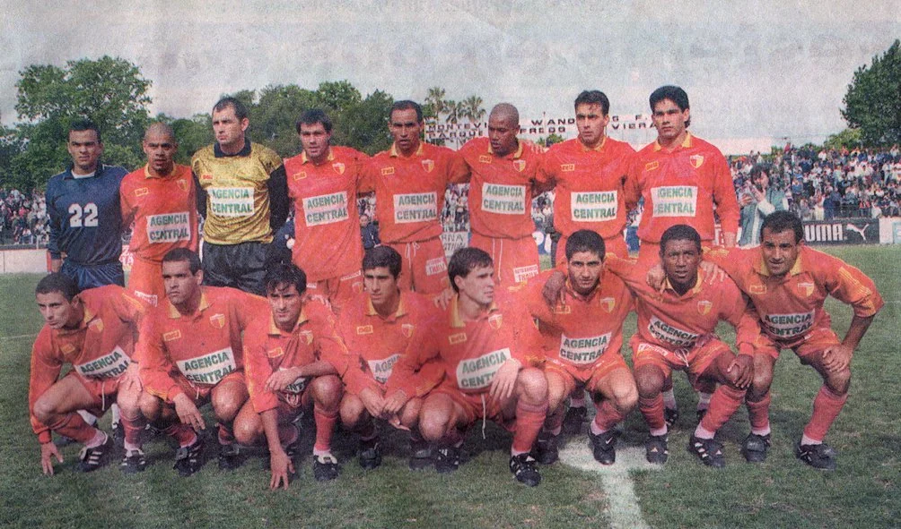
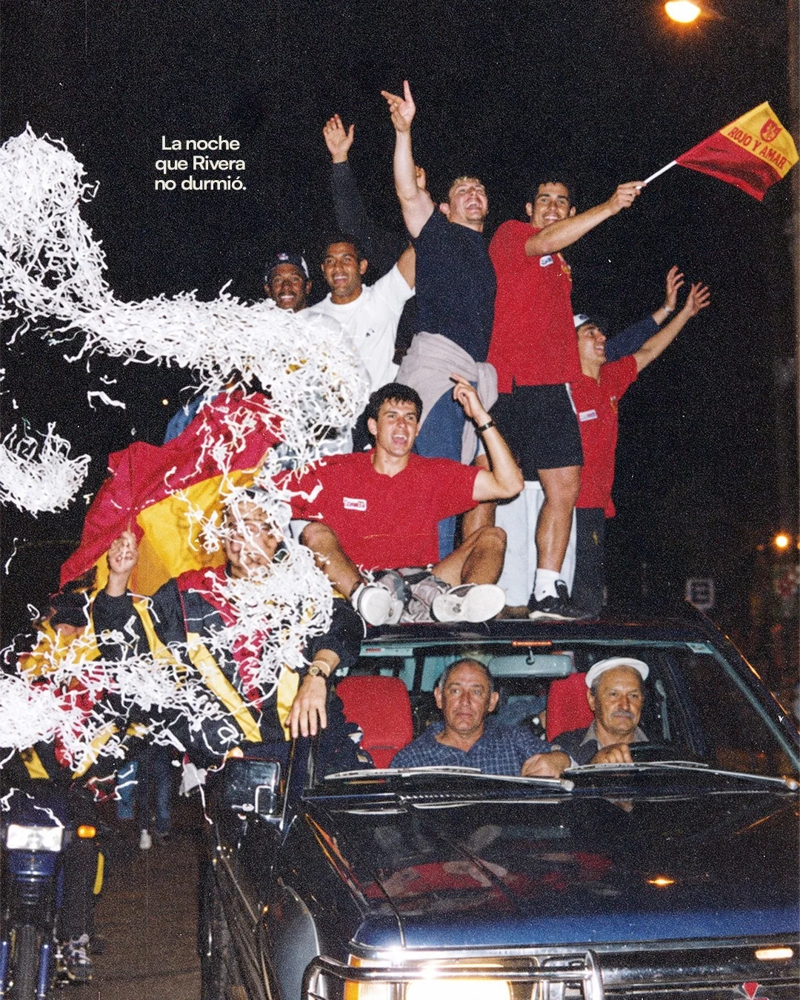

Hay fechas que quedan escritas en los libros y otras que permanecen para siempre en la memoria de un pueblo. Para Rivera, el 8 de noviembre de 1998 pertenece a las dos.
Aquella tarde, en el Parque Alfredo Víctor Viera de Montevideo, un modesto equipo nacido de la pasión futbolera de un barrio fronterizo consiguió lo que ningún otro club del interior uruguayo había logrado hasta entonces: ascender a la Primera División del fútbol profesional por méritos deportivos.
Pero para comprender aquella hazaña hay que remontarse algunos meses atrás, cuando hablar de Primera División parecía poco menos que una locura.
UN EQUIPO AL QUE POCOS LE TENÍAN FE
El año 1998 había comenzado entre dificultades. Frontera venía de una temporada complicada en Segunda División y su continuidad en el profesionalismo estuvo seriamente comprometida. Faltaba dinero, faltaban jugadores y, por momentos, hasta parecía faltar un futuro.
Los primeros entrenamientos estuvieron a cargo de Nelson Agresta y el profesor Fernández. Pero los problemas eran demasiados. En uno de aquellos viajes a Montevideo, el equipo llegó a presentarse con apenas doce futbolistas habilitados.
Agresta terminó alejándose de la dirección técnica en los primeros encuentros. Fue entonces cuando apareció un hombre que cambiaría el destino de aquella campaña: Carlos Wallace.
Wallace trabajaba con las divisiones juveniles y asumió la conducción del primer equipo en medio de la incertidumbre. Después de una breve experiencia inicial, fueron los propios futbolistas quienes lo buscaron para pedirle que continuara.
La situación económica llegó a ser tan delicada que se consideró abandonar el campeonato. Los jugadores aceptaron sacrificios, los dirigentes buscaron colaboradores y muchas familias ayudaron como pudieron.
Frontera no tenía grandes recursos ni poderosos respaldos. Tenía algo que terminaría siendo mucho más importante: un grupo de hombres convencidos de que todavía podían hacer historia.
Y así, casi sin que nadie lo advirtiera, el sueño comenzó a tomar forma.
CONTRA TODOS LOS PRONÓSTICOS
Durante la temporada llegaron triunfos importantes, derrotas dolorosas y puntos que parecían perdidos para siempre. El equipo fue encontrando su identidad bajo la conducción de Wallace, acompañado por un grupo de colaboradores que trabajó incansablemente.
La clasificación a la Liguilla fue una hazaña en sí misma.
En la última fecha de la fase regular, Frontera necesitaba ganarle a Colón y esperar que ninguno de sus rivales directos consiguiera una victoria. Las posibilidades eran mínimas.
Pero el fútbol, de vez en cuando, decide ponerse del lado de los que más creen.
Frontera ganó 1 a 0 con gol de Juan Marcelo Borges. Los demás resultados acompañaron y los rojos consiguieron meterse entre los cuatro equipos que disputarían el segundo ascenso.
En la Liguilla aguardaban Progreso, Central Español y Deportivo Maldonado. Tres rivales de peso y un solo pasaje directo a Primera.
El escenario elegido fue el Parque Viera, en Montevideo, considerado cancha neutral por las autoridades, aunque situado a unos quinientos kilómetros de Rivera.
Pero la distancia no pudo con la Cuaró.
El 24 de octubre, Frontera derrotó 2 a 0 a Progreso, con goles de Walter Surraco y Darwin Quintana.
Una semana después, el 31 de octubre, volvió a ganar por 2 a 0, esta vez frente a Central Español, con un gol en contra de Daniel Valverde y otro de Carlos Walter Silva.
Dos partidos. Dos victorias. Cuatro goles a favor. Ninguno en contra.
De pronto, aquel equipo que había estado al borde de abandonar la competencia se encontraba a noventa minutos de la gloria.
EL 8 DE NOVIEMBRE
El último adversario era Deportivo Maldonado, que también perseguía el sueño de ascender. Frontera llegaba con una ventaja decisiva: un empate le alcanzaba para ser campeón de la Liguilla y asegurar su lugar en Primera División.
Miles de riverenses habían viajado hasta Montevideo para acompañar a los rojos. En las tribunas del Parque Viera se mezclaban banderas, abrazos, nervios y esperanzas acumuladas durante generaciones.
Pero nada sería sencillo.
Deportivo Maldonado abrió el marcador por intermedio de Mario Barceló. Frontera reaccionó con un tanto de Carlos Walter Silva y luego Darwin Quintana puso el segundo. Antes del descanso, un gol en contra de Pablo Zanoni dejó el marcador 3 a 1 para los riverenses.
El sueño parecía estar al alcance de la mano.
Sin embargo, en el segundo tiempo llegó el sufrimiento.
Milton Cortés descontó para Deportivo Maldonado y Carlos Márcora estableció el 3 a 3. El empate todavía favorecía a Frontera, pero el rival necesitaba un gol más y se lanzó desesperadamente al ataque.
Los minutos parecían eternos.
Y entonces llegó una de esas jugadas que separan una historia inolvidable de una tragedia deportiva.
En la última acción del encuentro, Milton Cortés quedó frente al arco riverense. Lauro Piva salió a enfrentarlo y consiguió desviar el remate con la punta de su pie.
La pelota se fue al córner.
Y el partido terminó.
FRONTERA RIVERA ERA DE PRIMERA DIVISIÓN.
Por primera vez en la historia, un equipo del interior había conquistado deportivamente su lugar en la máxima categoría del fútbol profesional uruguayo.
LA NOCHE EN QUE RIVERA NO DURMIÓ
Lo que siguió fue mucho más que un festejo futbolístico.
Mientras los jugadores levantaban la copa en Montevideo, la noticia recorría los hogares de Rivera. En la Cuaró, las calles se llenaban de vecinos. La campana de la parroquia repicaba sin descanso y el barrio entero parecía haberse echado a la calle.
Uno de los testimonios de aquella jornada recuerda una escena tan curiosa como entrañable. Nelson Agresta, el entrenador que había comenzado la temporada, abrazó a uno de los dirigentes y, entre la alegría y una sonrisa resignada, le confesó que se sentía feliz por ellos, pero diez mil dólares más pobre: era el premio que su contrato le prometía si conseguía el ascenso.
La vida, y el fútbol, habían dado una vuelta inimaginable.
Entretanto, comenzaba el largo regreso por la Ruta 5.
Los primeros recibimientos aparecieron mucho antes de llegar a la ciudad. Al ingresar a territorio riverense, una enorme bandera roja anunciaba que la fiesta recién comenzaba.
La caravana creció kilómetro tras kilómetro. Automóviles, camionetas, ómnibus, bocinas y banderas acompañaron el retorno de los campeones.
Y cuando el plantel finalmente llegó a Rivera, la ciudad entera salió a recibirlo.
Estaban los hinchas de Frontera, naturalmente, pero también los de Artigas, Ansina, Oriental, Sarandí, Cuñapirú, Lavalleja y otros tantos clubes. Había banderas de Nacional y de Peñarol colgadas de los balcones.
Los rivales de toda la vida se abrazaban. Las diferencias deportivas quedaron suspendidas por una noche.
Porque aquella conquista ya no pertenecía solamente a Frontera.
Era una victoria de Rivera. Era una victoria del interior. Era la victoria de un pueblo que había aprendido a soñar contra todos los pronósticos.
LA GLORIA DE LOS QUE NUNCA DEJARON DE CREER
Aquel 8 de noviembre de 1998, Frontera demostró que el lugar de donde uno viene no determina hasta dónde puede llegar.
Desde las calles de Rivera Chico, desde las casas humildes de la Cuaró, desde una historia construida por generaciones de vecinos, futbolistas, dirigentes e hinchas, los rojos habían llegado a lo más alto del fútbol uruguayo.
Detrás de la copa estuvieron los esfuerzos de quienes aceptaron trabajar por menos, los viajes interminables, los colaboradores silenciosos, las familias que acompañaron y una hinchada que jamás abandonó.
También estuvieron los que no llegaron a ver aquella tarde y los que, con el paso de los años, se fueron marchando, dejando sus nombres y sus recuerdos en la memoria del barrio.
El ascenso de 1998 fue mucho más que una página deportiva. Fue una demostración de pertenencia, de sacrificio colectivo y de amor por una camiseta.
Porque esa tarde los rojos no jugaron solamente por un lugar en Primera División.
Jugaron por su barrio, por su gente y por una historia que había comenzado mucho antes de que cualquiera de ellos naciera.
Frontera entró de punto y salió de banca.
Y aquella noche, mientras las campanas seguían sonando y las calles se llenaban de banderas rojas y amarillas, Rivera descubrió que lo imposible también podía hacerse realidad.
8 DE NOVIEMBRE DE 1998.
EL DÍA QUE LA CUARÓ TOCÓ EL CIELO.

